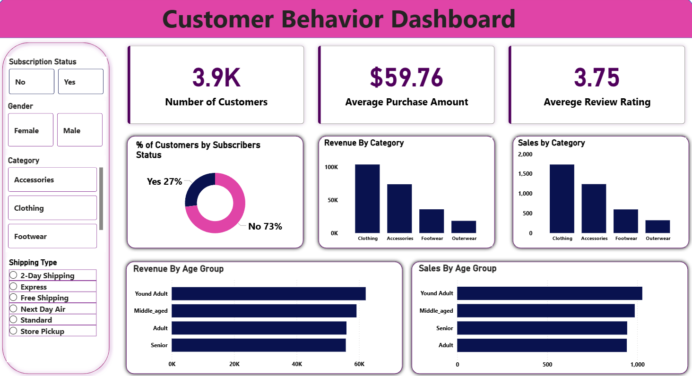

📊
Business Intelligence
Executive KPIs, category performance, subscription behavior, customer segments and purchasing patterns presented through Power BI.
A complete Customer Behavior Analytics platform combining Power BI, Python, SQL, statistical analysis and machine learning to explore purchasing behavior, segmentation, retention risk and business performance.
The project follows a practical analytics pipeline: prepare and validate the data, investigate behavior with Python and SQL, build predictive components, and surface the most useful findings through an executive-facing Power BI dashboard.
Executive KPIs, category performance, subscription behavior, customer segments and purchasing patterns presented through Power BI.
Churn-oriented modelling with training scripts and evaluation artifacts including ROC, confusion matrix and feature importance outputs.
Frequency, seasonal, promotional, subscription and statistical-test analyses to turn observed patterns into evidence-backed findings.
The Power BI deliverable brings the analytical outputs together into a business-facing view. The repository includes the PBIX file, DAX measures and dashboard preview.

Segment-level summaries and customer group analysis for understanding differences in purchasing behavior.
Retention-risk analysis and churn modelling provide a starting point for identifying customers that may need attention.
Category, product, location and purchasing-frequency analyses expose where customer activity is concentrated.
Promotion and discount analysis explores how offers relate to customer purchasing behavior.
Subscription analysis compares purchasing patterns and statistical differences across subscription groups.
Cleaning, processed datasets and data-quality reporting provide a reproducible foundation for downstream analysis.
Data preparation feeds Python analysis, SQL analytics, machine learning and the Power BI presentation layer, with a Django API available for model integration.

Raw customer data is cleaned, transformed, validated and organized into reusable analytical datasets.
Python notebooks, statistical research and SQL queries investigate customer, product, subscription and purchasing behavior.
Machine-learning scripts generate churn-oriented predictions and evaluation artifacts for model interpretation.
Power BI converts the analytical outputs into an interactive business dashboard and executive-level view.